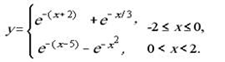

Мета: Опанувати теоретичні основи застосування рекурентних співвідношень для обчислення тригонометричних, експоненціальних, степеневих функцій та розробити програми функціональними мовам програмування для обчислення їх значень.
Вибір середовища та мови функціонального програмування
Для виконання лабораторної роботи було обрано мову Racket. У якості IDE було обрано онлайн компілятор Jdoodle, через простоту та зручность.
Обчислити значення функції у, розвинувши функцію e-x у ряд Тейлора. Аргумент х змінюється від -2 до 2 з кроком 0.5. Визначити похибку

; Завдання № 1
(define (fact n) ; Факторіал числа
(if (= n 0)
1
(* n (fact (- n 1))
)
))
(define (teylor x) ; Реалізації функції через ряд Тейлора
(define (ex_helper i prev current)
(if (and (> i 1) (< (abs(- current prev)) 1e-6))
prev
(ex_helper (+ i 1) current
(+ current (* (expt -1 i) (/ (expt x i) (fact i)))))
)
)
(exact->inexact (ex_helper 1 0 1))
)
(define (exp_func x) ; Реалізація функції із використанням EXP
(cond ((and (or (> x 0)(= x 0)) (or (< x 2) (= x 2)))(+(exp (* -1 x -2)) (exp (* -1/3 x))))
((> x 2) (+(exp (* -1 x -5)) (exp (* -2 x^2))))
)
)
(define (result x); Функція демонстрації результатів
(begin
(display "\nExp value =\t")
(display (exp_func x))
(display "\nTeylor value =\t")
(display (teylor x))
)
)
(map result (range 0 2.1 0.5))
Ввести з клавіатури два натуральних числа m, n. Визначити кількість способів, якими можна розсадити n людей серед m людей за круглим столом. Розміщення, що відрізняються тільки циклічним переміщенням навколо столу, вважаємо однаковими.
(define (B n k)
(if (and (>= n 0) (>= k 0) (>= n k))
(if (or (= k 0) (= k n))
1
(+ (B (- n 1) (- k 1))
(B (- n 1) k)))
0))
(B 5 3)
(B 7 2)
(B 10 5)
В лабораторній роботі №2 було реалізовано програму на мові Racket у середовищі Jdoodle, яка обчислує функцію у із використанням ряду Тейлора; реалізовано програму, яка рахує кількість можливих способів, якими можна розсадити n людей серед m людей за круглим столом.